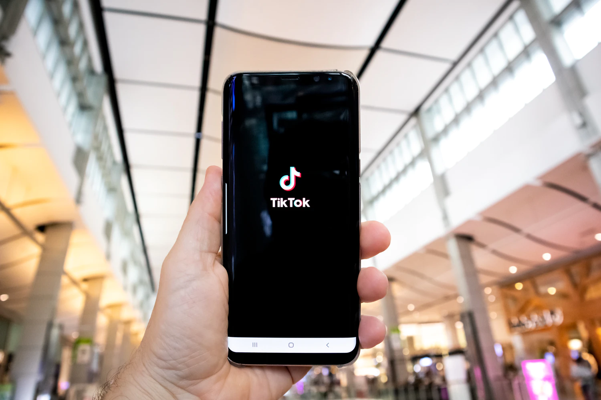

TikTok Health Tips: Helpful or Harmful?
By Group 13

In the past few years, TikTok has become more than just a fun app for dancing, lip-syncing, and sharing jokes. For many people, especially teenagers and young adults, it has also become a place to get health tips and advice. With just a quick scroll, you can learn about fitness routines, mental health tips, diet trends, and more. But is everything you see on TikTok really true and safe?
While TikTok can be a great source of inspiration and awareness, not all the health information shared on the platform is accurate or backed by science. Many creators are not medical professionals, and some may spread misinformation, either unintentionally or to gain views. This can be especially dangerous when it comes to topics like nutrition, mental health, or treating illnesses. It's important for users to be cautious, double-check advice with trusted sources, and consult healthcare professionals before trying anything that could affect their health.
Health Tips in a Minute?
According to the University of Chicagos Biological Sciences Division, many young people now prefer to get health advice from TikTok instead of asking doctors or health experts. This can be risky because not all TikTok creators are trained professionals. Some of them may give correct information, but many are just sharing opinions, personal experiences, or even false advice. Its important to know that health is serious, and following the wrong advice can lead to problems
The Problem with TikTok Influencers
An article from ABS-CBN warns that many TikTok influencers make health tips sound too simple or even magical. For example, some videos may show miracle cures for skin problems, weight loss, or mental health, but they dont explain the full truth. These videos can go viral quickly, and people might believe them without thinking. This is dangerous because some tips may not work or could even harm your body. Thats why doctors say we should check who is giving the advice and if they are really experts.
🧠Mental Health is also affected
Aside from physical health, TikTok can also affect your mental health. In a CNBC article, psychologist Jonathan Haidt talks about how using social media too much, especially TikTok, may cause anxiety, depression, and self-harm among teenagers. He believes that kids should not use smartphones too early and that spending more time with friends in real life is better for mental health. Watching videos all the time can make people feel lonely, sad, or pressured to look or act a certain way.
The video above discusses how TikTok and similar social media platforms can impact mental health, especially among young people. It highlights concerns from experts about increased anxiety, depression, and self-esteem issues linked to excessive use of these apps. The video encourages viewers to be mindful of the content they consume and to seek reliable information and support when it comes to health topics online.
TikTok: A new way to learn?
The Berlin School of Business & Innovation says that TikTok has become more than just a fun app its now a source of information for many young people. Its quick, easy to understand, and feels relatable. But the problem is that not everything on TikTok is checked or reviewed. Anyone can post anything, and theres little control over what is true or false. Thats why its important to think before believing or sharing health content from TikTok.
Conclusion
TikTok can be useful if we use it wisely. It can help us learn new things and discover tips for health
and wellness. But we should always double-check the information we see. Ask yourself: Is the
person giving advice a real expert? Does this advice make sense? Should I talk to a doctor before
trying it?
Another important thing to remember is that TikTok is designed to show us content we’re likely to enjoy,
not necessarily what’s true or helpful. This means we might see the same kinds of videos over and over,
even if they’re not accurate. To stay informed, it’s good to follow reliable sources, read from trusted websites, and talk to adults or professionals when we’re unsure. Being aware of how social media works can help us make better choices for our health and well-being.
As young people growing up in a digital world, we need to be smart and careful. Not everything
popular on TikTok is true or safe. So the next time you see a health tip while scrolling, dont just
follow itthink first, and swipe wisely